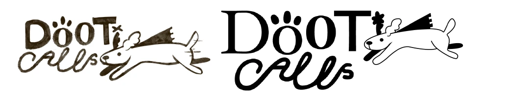
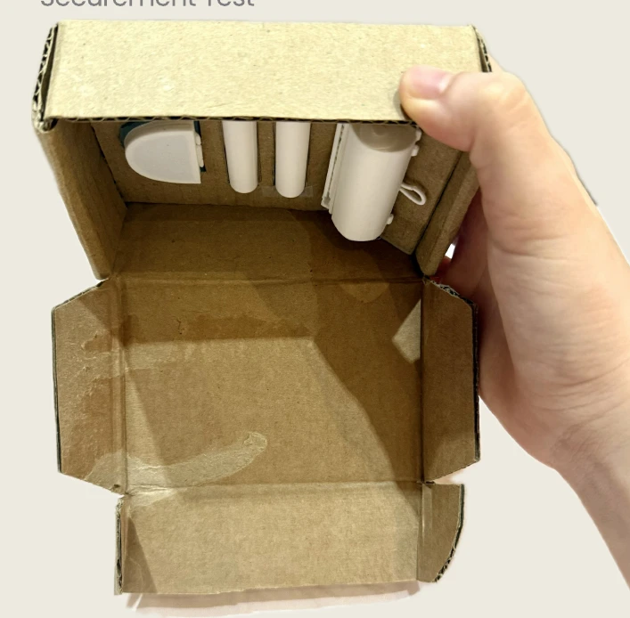
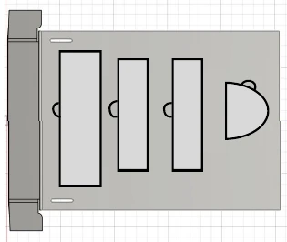
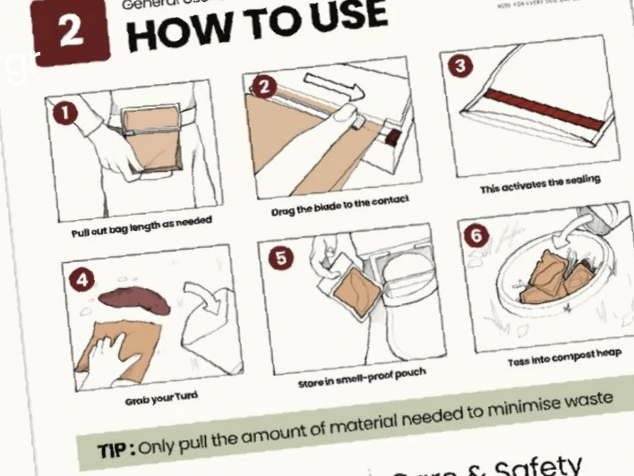

Dooti.
A better walk.
From pick-up to carry-home.

A handheld system that makes bags to size, seals them and keeps used bags discreetly contained.
- Discipline
- Product design
Design engineering - Scope
- User research · Prototyping
Testing · System integration
Branding · Packaging · Compliance considerations - Outcome
- Bag maker + refill roll
+ detachable carry pouch
01 / EXPERIENCE THE PRINCIPLE
A bag that fits
the moment.
Dooti makes a bag to size, seals it, and pairs it with a carry-home pouch. Try the adjustable refill: choose a length, then seal and cut.
Interactive concept · Proportions are illustrative.
Choose a length to suit the task.
02 / RESOLVE THE PRODUCT SYSTEM
Three decisions.
One continuous routine.
A variable-length refill, integrated sealing and cutting, and a carry-home pouch bring the journey together. Select a decision to explore it.
 FINAL ARCHITECTURE / REFILL ROLL
FINAL ARCHITECTURE / REFILL ROLLMATERIAL EFFICIENCY
Pull only what
you need.
Users select the length of compostable refill material to suit different dog sizes. The design aims to avoid the excess of a fixed, oversized bag.
03 / DISCOVER THE PROBLEM
A small task.
An uncomfortable routine.
The reason for this combined system starts after pick-up. Dog-waste disposal continues long after the bag is filled. Dooti explores how collection, material use and carrying can work together as one considered experience.
How might we make collecting, carrying and disposing of dog waste feel less unpleasant?

FROM EVIDENCE TO DESIGN PRIORITIES
01 Collect cleanly
Reduce direct contact during pick-up. The interaction needs to feel straightforward as well as hygienic.
02 Use only what is needed
The final refill concept lets users choose a bag length for different dog sizes, rather than defaulting to an oversized bag.
03 Carry discreetly
Feedback showed that carrying a used bag remained uncomfortable. This became a reason to extend the design beyond a bag-making device.
04 / DEFINE THE DIRECTION
Let the evidence
shape the product.
The design developed through practical trade-offs: portability, reliable bag making, a simpler grip and a more comfortable way to carry waste.
Paper-based bag making lacked portability and reliability.
Move towards an adjustable film refill with an integrated sealing and cutting mechanism.
The grip and pick-up method needed refinement.
Simplify the central finger grips and explore paper for pick-up with a film bag for storage.
Sealing did not resolve the discomfort of carrying.
Add a detachable, odour-resistant pouch for temporary storage during the walk.
DESIGN PRINCIPLEDesign the whole routine, including what happens after the main task.
05 / DEVELOP THROUGH MAKING
Form. Function.
Then everything together.
Each model answered a different question. Size and shape led to functional exploration, then to the relationship between parts and assembly.

Start with the object
in the hand.
The first model established the size and shape of the handheld bag maker.
- Question
- How should the roll and enclosure fit into a portable object?
- Focus
- Overall form, proportions and the arrangement of the refill.
- Next step
- Develop the functions and features within that form.

Give the form
a working purpose.
The next stage explored functions and features, bringing the refill and handheld interaction into a more developed product.
- Question
- How can dispensing, sealing and cutting belong to one routine?
- Focus
- Functional features, controls and the relationship between product elements.
- Next step
- Resolve how the components fit and work together.
Resolve the system
from the inside out.
The final architecture brings the blade, heat wire, electronics and casing into a guided handheld mechanism.
- Question
- How do form, function and assembly support one another?
- Focus
- Component integration and refinements to the assembled product.
- Design value
- A coherent architecture for dispensing, sealing and carrying.
06 / TEST, LISTEN, REFRAME
The walk doesn’t end
when the bag is sealed.
Feedback revealed the remaining discomfort: carrying used bags. The response was to make temporary storage part of the product itself.


Make and seal
the bag.
A compact tool for collection.
Make, seal
and carry.
A complete system with a detachable storage pouch.
The decisive iteration changed the scope of the product, as well as its form.
07 / MAKE THE ROUTINE APPROACHABLE
A little humour.
A more comfortable habit.
Handling dog waste is practical, but also emotional. Dooti’s identity brings the same care to the way the product speaks: friendly, recognisable and easy to understand.

Make it easier
to connect.
“Dooti Calls” plays on “duty calls”. An early superhero-style dog logo was difficult for users to understand, so the identity moved towards a simpler wordmark and expressive watercolour characters.

The different dog shapes echo the adjustable refill: one size does not fit every dog. Earthy paper tones bring warmth to the printed materials, while the product’s blue-green colour gives the object its own presence.

COLOUR, MATERIAL & FINISH
Let the details
support the walk.
- Feel the grip
- Textured lid studies explored secure handling, including use with gloves.
- See the state
- A translucent lid reveals the remaining roll and allows the status light to remain visible.
- Clean after carrying
- The flexible silicone pouch was designed to turn inside out for cleaning; a pale lid makes dirt easier to notice.
08 / DESIGN THE FIRST USE
The experience starts
before the walk.
A removable sleeve, folded box and fitted insert make the product easier to receive, unpack and understand. The packaging extends the same considered routine to first use.


Paper sleeve
Carries the identity, contents and essential information. A single adhesive join allows the sleeve to slide off and separate from the box.
Cardboard mailer
A die-cut, folded structure uses interlocking tabs. The proposed production box stays uncoated and unprinted.
Fitted support frame
A diagonal insert holds the maker and refills without extra fasteners. Finger openings help users lift the parts out; the frame can become a guide display stand.
Explore the dielines and assembly study


Half-scale model; pre-cut and pre-creased parts.
Report estimate for a 1,000-unit batch.
Report estimate for a 10,000-unit batch.
Prototype timing and modelled costs describe the study conditions; production tooling, supplier quotes and full-scale transit testing remain next steps.
INFORMATION AT THE RIGHT MOMENT
Open. Set up.
Step outside.
The guide uses illustrated steps to explain loading the refill, making a bag and using the pouch. Setup and care information sit beside the interaction, while a proposed QR route makes room for more detailed support.

09 / BUILD CONFIDENCE INTO THE DETAILS
Care in use.
Clarity beyond it.
A handheld product with heat, a blade and replaceable materials needs more than a resolved form. Safety, assembly and clear product information were considered alongside the everyday interaction.
The report maps safety and labelling considerations. Formal conformity assessment and certification of the finished product are not evidenced in the project documentation.
01Protect the interaction
Design response
An enclosed cutting mechanism and shielded sealing area reduce direct access. The electronics prototype uses timed heating and thermistor feedback to support an over-temperature cut-off.
Next validation
Check accessible surface temperatures, repeated heating, sensor faults, blade access and foreseeable misuse on the integrated device.
02Make assembly and recovery practical
Design response
Drafts, fillets, clearances, alignment features and guided wire routing were developed for the casing and assembly. A removable battery compartment and separable electronics support maintenance and end-of-life handling.
Next validation
Confirm moulding tolerances, fastener access and assembly sequence. Review electrical safety, EMC, restricted-substance evidence and battery handling for the intended market.
03Separate the disposal instructions
Design response
The label layout distinguishes the device, refill and outer packaging. Product identification, batch information, care warnings and support details each have a defined place.
Next validation
Test whether users can identify the right route for each component. Confirm market-specific markings and disposal wording before production artwork is released.
04Match every claim to its evidence
Design response
The variable-length refill expresses a specific material-saving intention: dispense the length needed for the task. Material choices and disposal conditions need equally specific explanations.
Next validation
Measure material use in real walks and validate the complete refill construction. An exploratory material test does not establish certified compostability or the safety of composting pet waste.
Design evidence: supplied final-term report, PDF pp. 4–12 and 33–40. Compliance framing: UK product safety guidance and the CMA Green Claims Code.
10 / THE DESIGN TAKEAWAY
Better products come from
following the whole experience.
Desirability
User feedback connected cleaner pick-up with the need for discreet carrying.
Feasibility
Physical prototypes and the final architecture brought form, function and assembly into the same design process.
Material responsibility
The adjustable refill aims to reduce excess material by letting the user choose the bag length.